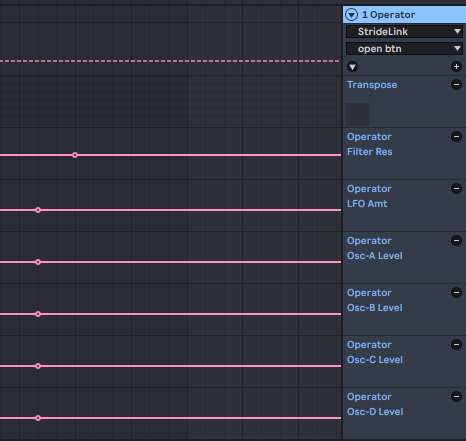
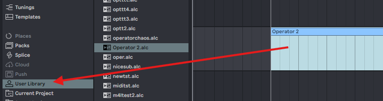
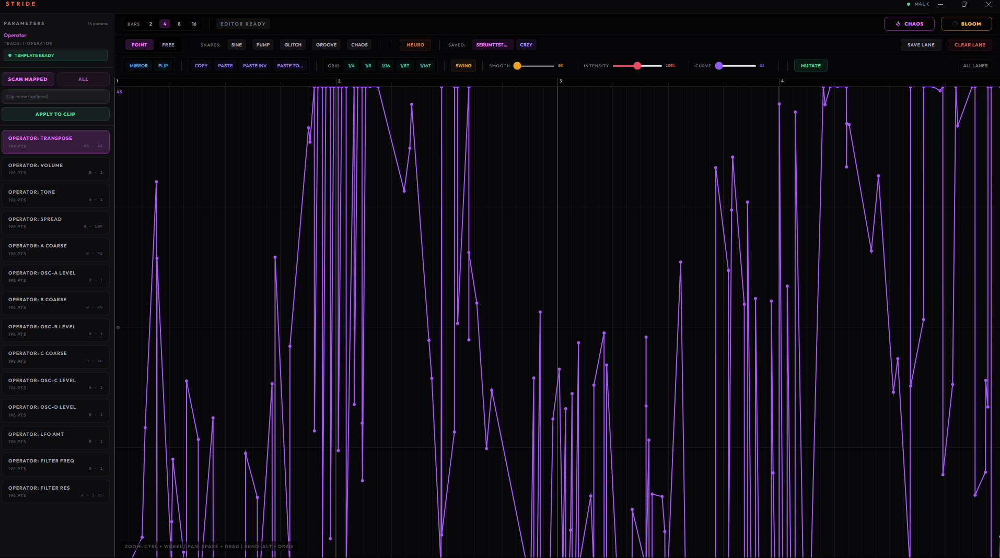
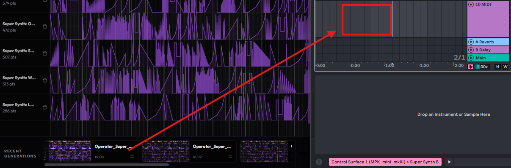

Drag the MIDI clip from your rack's track to set it as the template. Stride will scan automatically.
Saves all canvas curves, parameters, and template reference.
Your racks, reborn — in 7 steps
Build a synth from scratch or load an existing rack/preset onto a MIDI track.
Every parameter you want Stride to control needs a single automation point on its lane — just enough to tell Ableton "embed this envelope in the clip." The fastest way: arm recording and touch each knob once.
Fastest way (recommended)
1. Hit F9 to arm automation recording.
2. Nudge every knob you want Stride to control — Ableton drops an automation point on each one you touch.
3. Hit F9 again to disarm. Done.
Or, manually
Show the automation lane for each parameter → click once on each lane to drop a single point. Slower, but works if you don't want to arm recording.
Important
Every parameter needs at least one automation point on its lane. Without a point, Ableton won't embed the envelope and Stride can't write to that parameter.

Drag StrideLink.amxd from the M4L folder onto the same MIDI track, after your instrument.
Drag the MIDI clip (the clip slot with your recorded automation) to the User Library in Ableton's browser sidebar. Stride detects the new .alc file automatically and imports it as your template.
Drag the clip, not the rack
You must drag the clip — the colored block in the clip slot — not the rack/device title bar. Only the clip contains the automation envelopes that Stride needs.
Template = snapshot of your rack
The template captures exactly which parameters your rack has right now. If you later add or remove devices, change the rack, or work on a different track — drag a new clip to User Library again. One template per rack setup.
What happens
Stride watches your User Library folder. When the .alc file lands there, the canvas shows a green confirmation — your template is saved to ~/Desktop/Stride/template/ and ready to use.

In StrideLink (or the canvas sidebar), click Scan Mapped. This reads all parameters that have automation lanes and loads them into the canvas.
Before you scan
Make sure you did Step 4 first — the template must exist before you apply. If you're working on a new rack or changed your device chain, drag a fresh clip to User Library again.
The Stride canvas launches with your parameters as lanes. Draw curves, apply templates, use Chaos to fill all lanes at once, or Bloom to spread one curve across every lane with variations.
Name your clip in the input field, then click Apply to Clip.

After you hit Apply, a big Ready to drop card slides up in the middle of Stride. Grab it and drag it straight into an empty clip slot in Ableton. That's it — no folder to find, no file to open.
Keep going
Tweak your curves, hit Apply again — each apply updates the card in place with a fresh .alc. Drop 3-5 variations in a row, then A/B them in Ableton.
Need the file?
Every .alc is also saved to ~/Desktop/Stride/. Hit Open folder on the bottom-right toast to browse them in Explorer.
Automation looks wrong?
If the output doesn't match your canvas, your template is probably outdated. Go back to Step 4 — drag a fresh clip to User Library to update the template for your current rack.

Need help? stridehub.io
You have existing automation curves. A new scan will replace them.
One-time setup
Stride needs to drop its Max device (StrideLink) into your Ableton User Library. Afterwards, open Ableton's browser → User Library → Stride → drag StrideLink onto any MIDI track.
Your racks, reborn.
Stride turns your Ableton racks into modulation playgrounds. Before you dive in — there are two short videos in the Guide folder. Three minutes total. Watching them first will save you hours.
Press Scan Mapped in the sidebar to pull your rack's parameters into the canvas.
Sign in with your license to unlock generation features.
Complementary curves for all your params
Loading presets...